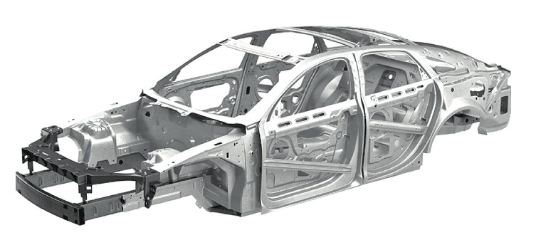

Deciding How To Process Your Part

When choosing the best method for manufacturing your part you must take into account the material. Depending on your material a specific processes may be required or restricted. Think about how plastics can get molded, printed, and formed. These strategies do not work with wood. Because of this, understanding the properties of your chosen material is essential before deciding on an approach.
Another important factor to consider when selecting your manufacturing process is the level of precision required for your part. Some methods are better suited for rapid prototyping and one off designs, while others work better for large scale production. For instance, CNC machining and 3D printing are used when high levels of precision and customization are needed. On the other hand, processes like stamping and injection molding become more cost effective when producing large quantities. Choosing the right balance between precision, cost, and production speed ensures that your part is not only functional but also practical to manufacture.
Other decisions to be made are based upon factors like cost, lead time, and the complexity of the part being manufactured. Costs related to the manufacturing of certain parts of a product can be high upfront but be cost effective due to scalability. Other processes may be quick and easy to set up but have limitations in the speed and types of products that can be manufactured. These various factors must be considered to decide which manufacturing process will be the most efficient, producing the desired product, and meeting requirements.
Material Recommendations
PLA (Polylactic Acid)
Biodegradable, bio-based thermoplastic. Good for 3D printed sculptures.
4140 (Steel)
Midgrade steel capable for most applications.
AL 6061 (Aluminum)
Lightweight aerospace grade offering corrosion resistance.
304 (Stainless Steel)
High grade stainless steel. Expensive but strong and reliable material for outdoor use.
Ti-6Al-4V (Titanium)
Medical and surgical grade, great when failure is not an option.